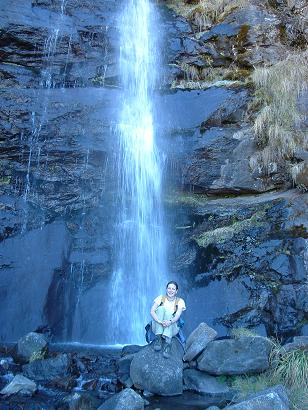
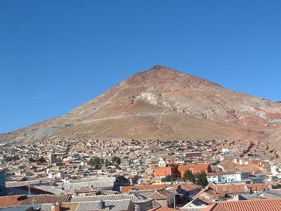
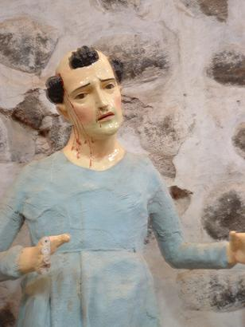

La indecisión es la llave a la
flexibilidad
|
|
||
|
La indecisión es la llave a la
flexibilidad |
|
|
|
********************************************************************************************* Newer news can be found on scotlandnews |
| Cuidad del Este and Itaipu Dam, Paraguay, June 29-30, 2005. | ********************************************************************************************* Cuidad del Este is Paraguay's second city and exists largely because of the building of the world's largest hydroelectric dam and plant back in the 1970s. These days it's a duty free town popular with Brasilians and Argentines who make the short trek across the Friendship Bridge for the bargains. It's a messy but friendy town, despite its unsavoury reputation; again not many tourists - mostly day trippers. Kind of like Limerick really. This is the view from the park looking across the Rio Parana to the Brasilian city of Foz de Iguazu. About five km south along the river is the confluence with the Rio Iguazu. The confluence marks the meeting point of Paraguay, Brasil, and Argentina.
The following day, we took the Guatamala-style bus to the Itaipu Dam, just north of the town.
Until the Three Gorges Dam in China comes on line, this is the biggest puppy - one of the wonders of the modern world. The dam (on the right) is eight km long, the spillway (on the left) is only for overflow. A joint project by Brasil (seen on the far side) and Paraguay (foreground), it generates 25% of Brazil's electricity supply and 80% of that of Paraguay. In terms of power ratings and size, this thing is classified as really, really big.
OK - here's the geography lesson again: In the foreground you have Paraguay, the city on the left is Foz de Iguazu in Brasil, and the city on the right is Puerto Iguazu, Argentina.
Here's a blurry picture of the turbine room (sorry Simon, it was dark). There are 18 of them, with two more being built, one on each side. Amazingly, Brasil and Paraguay are on different voltages, but it all seems to work fine.
Catherine, electronic engineer, is pleased with the plant and dropped off her CV at the front office.
Really big wall, holding back a really big amount of water...
Really big pylons, marching off across the Brasilian plains...
The next day, all overwhelmed with the immense achievement of Itaipu, the team walks across the Friendship Bridge into Brasil. Contrary to what everyone thought, spoken Portugese is nothing like spoken Spanish. This was the first cultural shock of the new country. On the left, shoppers pour into duty free Cuidad del Este. The motorbikes are taxis that zip over and back all day. We were the only ones bothering with border formalities. A chaotic border crossing.
On our first night in Cuidad del Este we had strolled across the bridge observing the smugglers at work. We don't know what was in the packages, but a van was carrying them quarter way out from the Paraguayan side, where they were transfered to motorbikes. The motorbikes took them to within 200 metres of the Brasilian border control, where they were thrown over the side of the bridge to some people waiting below. We didn't stop to ask any questions.
|
| Rural Paraguay, June 28, 2005. | ********************************************************************************************* After a short stay in the city, the team, rapidly running out of time, was back on the bus racing through rural Paraguay. The place to see if you have the time and are hardcore enough is the Chaco region west of Asuncion. We are plenty hard as you know, but we didn't have the time, so we went east instead towards Brasil. Here's a photo of eastern Paraguay out of the bus window. Looks nice, eh?
|
| Asuncion, Paraguay, June 27, 2005. | ********************************************************************************************* From Resistencia it was a short hop into Paraguay, one of the real unknown countries on the itinerary. The border crossing was a little tense as the team had conflicting information on whether Irish citizens needed a visa or not. If they did, we would have to backtrack 300 km. As it turns out, that rule has been changed and everything went smoothly, without special visas. Asuncion, the capital, was nothing like the book and other gringos had lead us to believe. It was cool, very laid back, not at all as impoverished as expected. We got the impression that not too many tourists make their way there - once again Scotland '04+1 was a tourist attraction. This is the Presidencial Palace...
Don't get me wrong about the poverty - Paraguay is the same as everywhere else in that there is a wide gap between rich and poor. This is the shantytown, unusually though, it is located 10 metres from the main plaza.
A strange ethnic mix here - natives are Guaranis and their language is spoken by everyone. Oddly, there is a huge German community, and if you had no Spanish but only German, you would be fine. Lots of Mercedes Benz and alpelstrudel. This is the Rio Paraguay, lined with rowing clubs and golf courses.
A diverse and interesting people, the Paraguayans; none too pretty, but it was fascinating to talk with them.
|
| Random Orange Lunatic, Tafi de Valle, Argentina, June 23, 2005. | ********************************************************************************************* On the Tafi hike this guy was taking a break from his job on the road crew painting roadside boulders with white emulsion. He was clambering up the cliff shouting his head off, while his collegues back on the road shrugged and continued to paint the boulders. Road safety in Argentina is in the hands of random orange lunatics like this guy.
|
| Tafi de Valle, Argentina, June 23, 2005. | ********************************************************************************************* On a side trip from a temporary base in Tucuman, the team went for a hike around the mountain town of Tafi de Valle. Funny how you never remember pain, and even after Macchu Picchu, a hike seemed like a good idea. In fairness, though, it was good to stretch the legs again after what had been a series of bus and jeep trips. This is the waterfall...  and this is the view...
Near Tafi there is a collection of standing stones from a civilization about which little is known. It is believed that each family had a pillar outside the home, as a fertility symbol.
Some of them are phallic, some are depictions of pregant women. This one is both - phallic on the right and pregnant on the left. What are you laughing at, Halpin?
The stones were originally placed all around the valley, but have been gathered together in the town for preservation. They are hoping to build a museum to house them.
Big windsurfing venue, except in the evening when the fog rolls in across the lake, like a Deep Purple song.
|
| Tucuman, Argentina, June 21, 2005. | ********************************************************************************************* With the situation in Bolivia threatening to deteriorate further, the team heads back into Argentina for a bit of a think about the onward direction. Anyone looking a a map of South America might wonder where exactly are they trying to go. There was a briefly-lived possibility of getting cheap flights to Easter Island from Santiago, Chile, but ultimately, nothing came of this. The decision was made to begin the trek home. With six weeks remaining before Catherine's flight to Dublin out of Buenos Aires, a vague plan came together: Argentina, Paraguay, Brazil, Uruguay, and back to Buenos Aires. The team celebrates a new-found purpose with a trip to Tucuman's School of Jim.
|
| Tupiza, Bolivia, June 17-18, 2005. | ********************************************************************************************* By the time the team was finished wandering the streets of Potosi and sampling the salte�as (sweet and sour empanadas, only available in the morning), Bolivia had lurched back into crisis mode. It was decided to head south to the Argentine border, stopping off on the way in Tupiza for some horse riding.
This is the Puerto de Diablo. Our guide explained some very long folktale about it involving Spanish captains, a beautiful local woman, the devil, and low-temperature rinse cycles. I may have mistranslated some of the details, but that was the jist of it.
Here's a random arty shot of the sun behind a cactus. This is to keep Donnie happy.
Catherine, taking a break from her terrifying ordeal on a grumpy horse, explores the Canyon of the Inca. Didn't find any little Inca dudes up the canyon.
This is a shot of the plaza in Tupiza. Nice, quiet little town...
...with a giant tree-carving of a naked woman with a snake wrapped around her. Biblical reference to the Garden of Eden? You don't fool us. |
| Potosi, Bolivia, June 14-15, 2005. | ********************************************************************************************* Upon reaching Uyuni the news was that Bolivia had a new president and so all the troubles were over. The team scrapped its plan of hightailing it back to Argentina in favour of exploring a little more of the country. As it turned out, the street protesters were only taking a break and that the new president would only have a week of peaceful rule before tensions flared up, the way tensions do, once more. Onwards to Potosi, for a brief time...
This is a view of Potosi's watertower taken from the Jesuit bell tower.
Potosi was once the richest city in the world, all thanks to this mountain, Cerro Rico (Rich Mountain).  The mountain was one of the richest deposits of silver in the world and the Spanish conquistadores wasted no time in exploiting it to the full. It didn't do the local Inca any good of course as all the silver was sent directly to Madrid. This mountain financed the Spanish Empire and all that went with it; Bolivia continues to be one of the poorest nations on the planet. The Bolivians never lost their sense of humour, despite it all. This is the entrance to the Casa de Moneda, the mint in which the silver from the mountain was turned into Spanish coin. The mask over the arch is a representation of the Roman god Bacchus, the god of wine and good times. The liberated Bolivians put his laughing countenance up there when the Spanish were being kicked out of their colony.
This is the room, kept in darkness, where the minting was carried out. The grinding and milling machines are made of durable cedar wood, sent from Sapin by ship to Buenos Aires and then 14 months by mule train to Potosi. It is estimated that this room generated over half of the wealth of the Spanish Empire.
In this room, directly beneath the machines in the last picture, mules powered everything by walking around and around and around...
This statue, elsewhere in the Casa de Moneda museum, reminds Jim of a former work colleague. Nice dress, Tom.  This is an assay furnace in the metallurgical laboratory, where the Spanish tested the quality and composition of the silver. This photo is by request of Catherine for her brother Tim, who is crazy into metallurgical stuff.
It would be remiss of us to visit Bolivia and fail to put up a photo of Simon Bolivar, the great Liberator, a hero in practically every country of South America.
Strange things happen and you end up in strange places. The team stuck its collective head around the open door of a closed theatre to have a look and the two children running the place offered them the guided tour. This unofficial tour brings you up onto the roof, far above the street. Thanks kids.
|